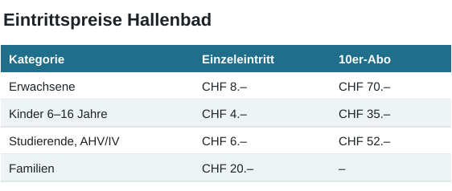

Preise
Die Preise gelten ab 1. Januar 2027. Kinder unter 6 Jahren baden gratis.

Öffnungszeiten
Montag bis Freitag 8.30–11.30 Uhr und 14.00–17.00 Uhr, Donnerstag durchgehend bis 18.30 Uhr. Vor Feiertagen schliessen wir bereits um 16.00 Uhr.
Weitere Meldungen
Gut zu wissen
Die meisten Formulare können Sie online ausfüllen und per E-Mail oder Post einreichen. Bei Fragen hilft Ihnen das Team am Schalter gerne weiter.